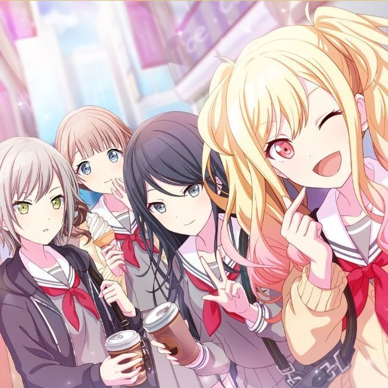
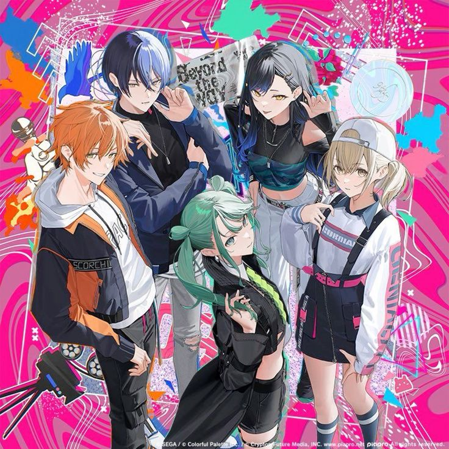

Wonderlands×Showtime
Wonderlands×Showtime is a vibrant and magical group from Project Sekai! Their performances are full of energy, bringing a sense of awe and wonder to their audience. Each member brings their unique talents to create an unforgettable show that’s all about fulfilling dreams and making magic come to life.

Leo/need
Leo/need is a group full of youthful energy, focused on the bond between its members as they grow and face challenges together. With a focus on friendship and collaboration, their music often carries an uplifting message about overcoming struggles and moving forward together.

Vivid BAD SQUAD
Vivid BAD SQUAD is a group that represents the world of street culture, incorporating rap and a rebellious spirit into their performances. With their bold, edgy styles and powerful lyrics, they aim to express the power of individuality and breaking free from societal norms.

MORE MORE JUMP!
MORE MORE JUMP! is a fun and energetic group that embodies the joy of performing and bringing smiles to people’s faces. Their music and personalities shine with positivity, making them a group that encourages others to never stop jumping for joy, no matter the obstacles.

-Nightcord at 25:00
-Nightcord at 25:00 is a group that focuses on the emotional side of music, exploring themes of loneliness, dreams, and personal growth. Their music often delves into deep, reflective emotions, offering a safe space for listeners who are navigating their own journeys.